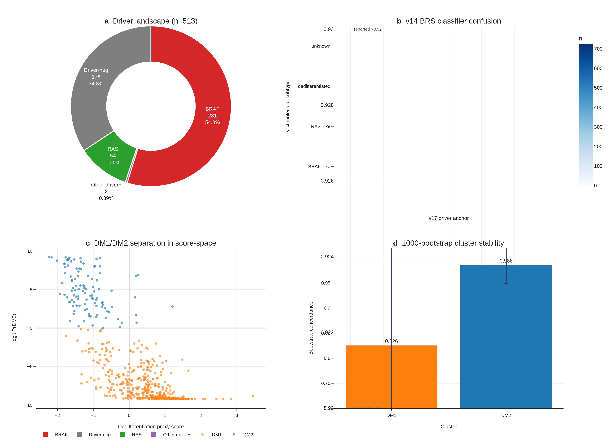
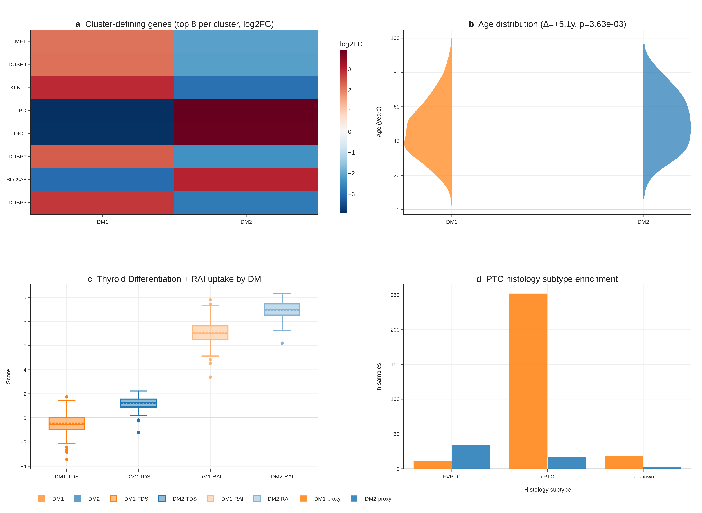
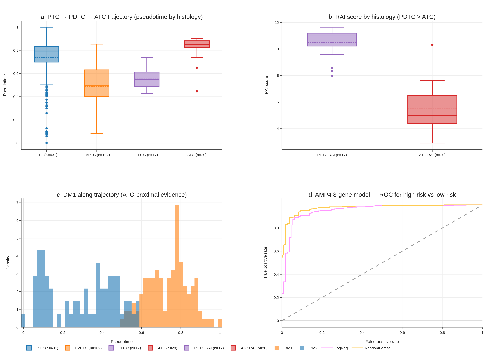
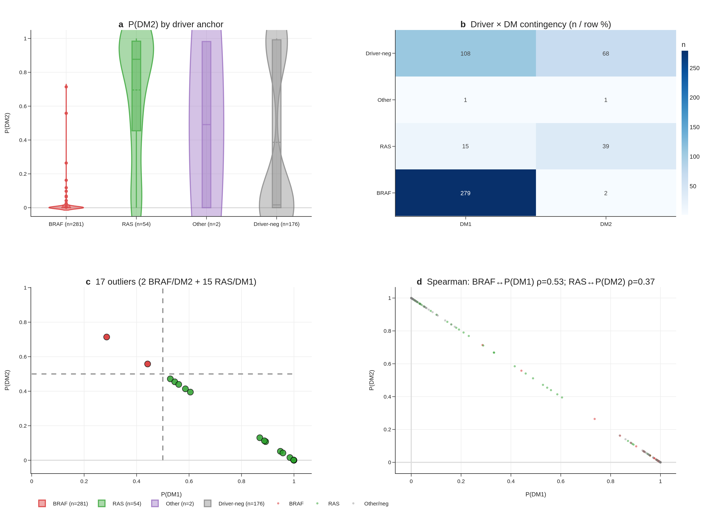
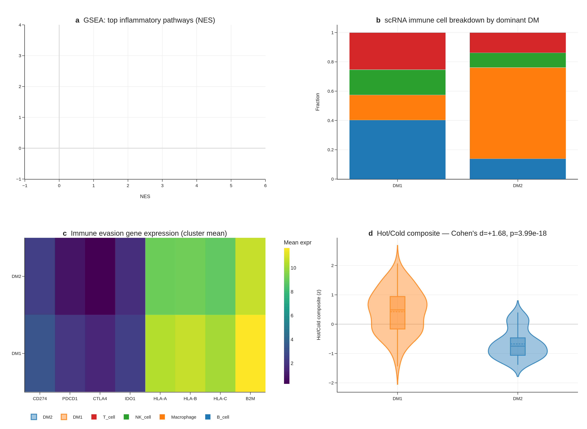
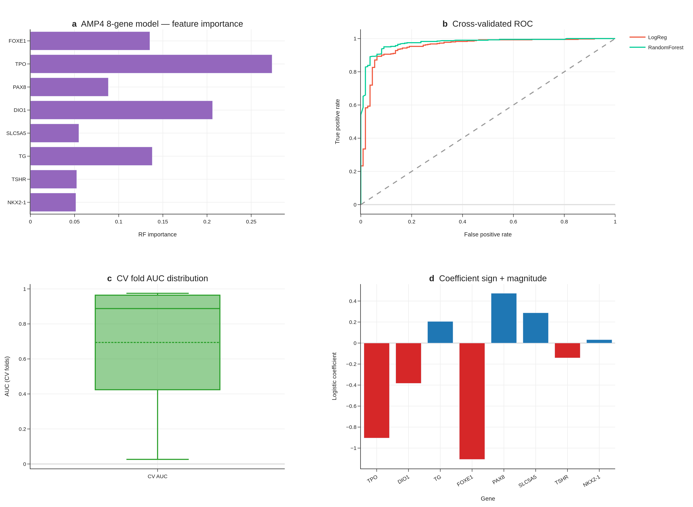
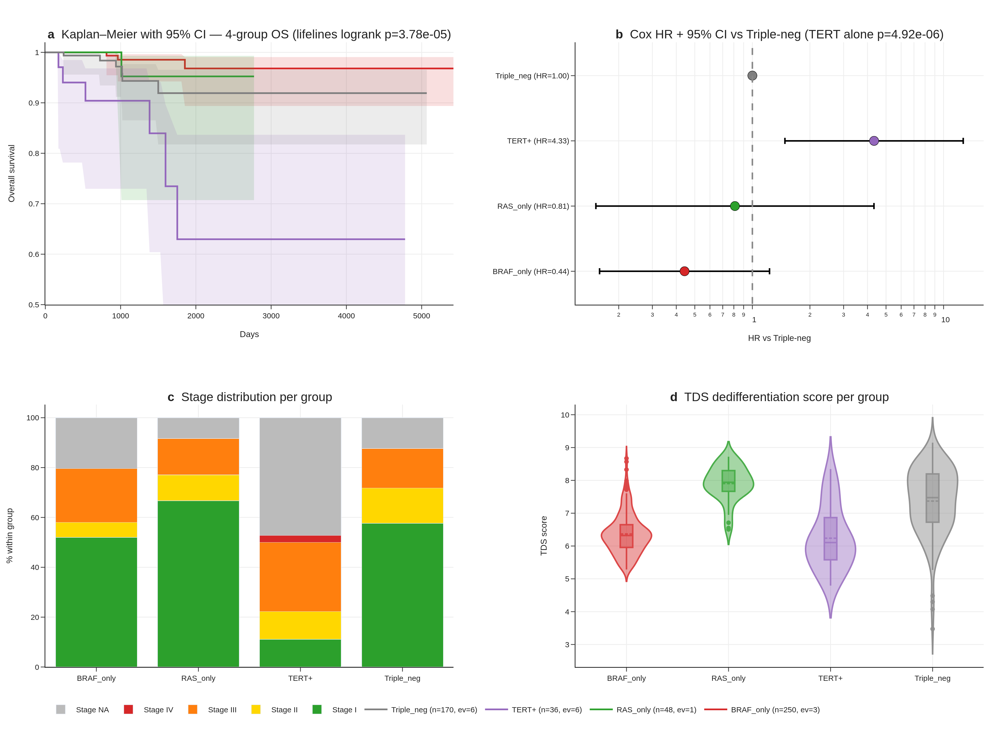
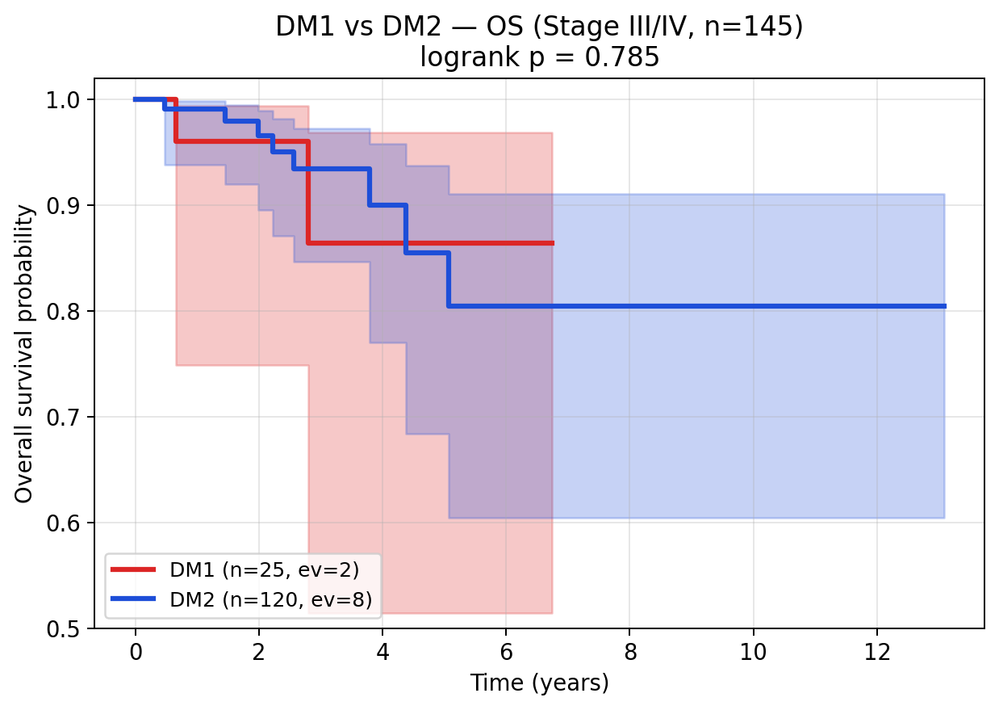

#5v17 npj — 8-gene RAI biomarker (TERT recovery) Ship-ready ⏸ paused
"An 8-gene RAI-responsiveness biomarker outperforms BRAF V600E status in papillary thyroid carcinoma" · npj Precision Oncology · 제출 직전 일시 정지
HR = 4.33
TERT⁺ Cox · joint 4-group · p=4.9×10⁻⁶
cBioPortal `thca_tcga_pub` 에서 TERT promoter mutations n=36 recovery (v1 missed it). lifelines TERT⁺ Cox HR=4.33 — joint 4-group (DM1×TERT) survival 분석에서 가장 뚜렷한 effect. Manuscript_v6 ~12.9K words ship-ready 2026-04-27, 4 outreach 미발송. Paper 1 의 직계 ancestor — manuscript R1–R5 + reviewer FAQ 재활용 가능.
한 줄 핵심
8-gene RAI panel 이 BRAF V600E status 를 능가 하는 PTC stratifier 임을 입증한 ship-ready 패키지 (manuscript_v6 ~12.9K words + cover letter v6 + reviewer FAQ + Korean dashboard + supplementary tables + anonymous code zip). TERT promoter mutations n=36 + lifelines TERT⁺ Cox HR=4.33 (joint 4-group, p=4.9×10⁻⁶).
왜 paused 인가 (그리고 왜 살아있는가)
2026-04-30 Yu 미팅 → backburner 결정. 같은 날 PM "Dark Matter reframe" → Paper 1 (v8) 으로 evolution. v17 npj 는 Paper 1 의 직계 ancestor — manuscript_v6 의 R1–R5 흐름 + reviewer FAQ + Korean dashboard 모두 disk 보존. 재제출 옵션 본인: (a) Paper 1 ship 후 npj 재제출, (b) Paper 1 에 subsume, (c) v17 npj 별도 venue.
Status
Ship-ready 2026-04-27. 4 outreach 미발송. 마라톤 pivot 으로 일시 정지.
Target venue
npj Precision Oncology (article)
Word count
~12.9 K (manuscript_v6 / v6_ULTIMATE)
Memory
v17_npj_ship_status · v17_tert_recovery_v2 · v17_korean_k2_calibration · v17_graves_pivot · v17_dark_matter_pivot_2026_04_29
Bundle artifacts (project/submission/npj/)
Manuscript manuscript_v6_ULTIMATE.{md, html, pdf, docx} + v7 dump · 12.9K words
Cover letter cover_letter_v6_ULTIMATE.{md, html, pdf, docx}
Reviewer FAQ reviewer_faq.html · 20+ anticipated Qs + rebuttals
Easy explainer easy_explainer.html · plain-Korean DM1/DM2 (no jargon)
Korean dashboard v3 korean_dashboard_v3.html · PRJEB11591 K2 pilot · Fig K2 + 3D + outreach drafts
Supplementary tables Supplementary_Tables_v6_ULTIMATE.xlsx
Anonymous code anonymous_code.zip · reviewer-readable
Submission ops SUBMISSION_CHECKLIST · SUBMIT_INSTRUCTIONS_v7
Key figures









Outreach drafts (NOT sent — author authority)
project/outreach/landa_email_v1.md— Landa Iñigo (MSKCC, JCI 2016 author)project/outreach/xing_email_v1.md— Xing Mingzhao (Hopkins, BRAF/TERT expert)- + 2 more outreach drafts at
project/outreach/ - Per memory
v17_npj_ship_status: "user sends + clicks submit" — Claude 가 발송 안 함
Decision options (post-marathon)
| Option | Path | Cost |
|---|---|---|
| (a) Resume npj submission | Paper 1 bioRxiv ship 후 outreach 발송 + npj 정식 제출 | 4 outreach + 제출 process · v6 manuscript 그대로 |
| (b) Subsume to Paper 1 | v17 npj 의 R1–R5 + reviewer FAQ 를 Paper 1 v9 outline 에 흡수, npj 제출 포기 | v17 npj submission cycle 무산 · Paper 1 manuscript 풍성해짐 |
| (c) 별도 venue | npj 외 다른 venue (e.g., Modern Pathology, Endocrine Pathology) 로 v17 npj 재제출 | cover letter / scope 재조정 필요 |
Recommendation (post-marathon): Paper 1 bioRxiv 6/13 ship 후 Paper 1 v9 outline 의 evolved scope 보고 결정. v17 npj 는 ancestor 이므로 Paper 1 의 일부 substrate 와 겹치지만 venue framing 이 다름. (a) 와 (b) 는 mutually exclusive.
Anchor files
Entry point
project/submission/npj/index.html + README.mdManuscript
project/submission/npj/manuscript_v6_ULTIMATE.{md,html,pdf,docx}Cover letter
project/submission/npj/cover_letter_v6_ULTIMATE.*Submit ops
project/submission/npj/SUBMIT_INSTRUCTIONS_v7.{md,html}Reviewer FAQ
project/submission/npj/reviewer_faq.htmlKorean dashboard
project/submission/npj/korean_dashboard_v3.htmlEasy explainer
project/submission/npj/easy_explainer.htmlSupp tables
project/submission/npj/Supplementary_Tables_v6_ULTIMATE.xlsxCross-paper bridges:
v17 npj 는 Paper 1 의 직계 ancestor. Paper 1 v9 outline 작성 시 v17 npj manuscript R1–R5 flow + reviewer FAQ 를 reference 가능. Cover letter / abstract scope 만 Cell Rep Med / JCI Insight 향으로 다시.
결정 후보: (a) Paper 1 ship 후 npj 재제출 / (b) Paper 1 에 subsume / (c) 별도 venue.